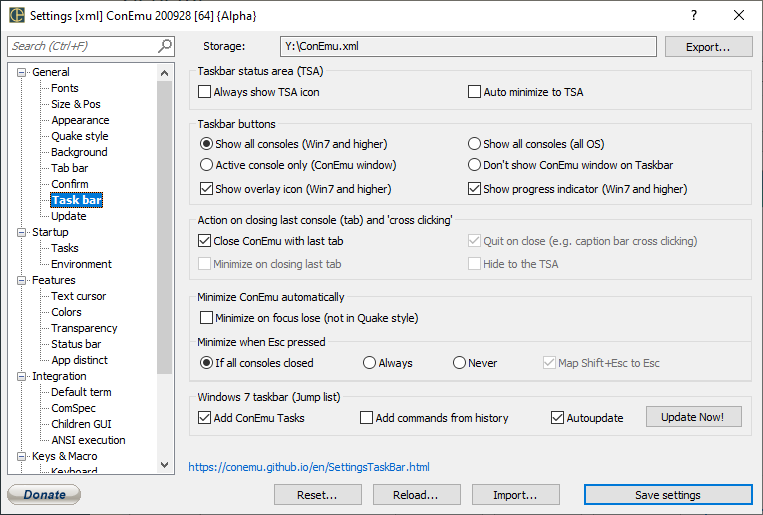

Always show TSA icon Always show ConEmu icon in the Taskbar Status Area (TSA)
Auto minimize to TSA Auto minimize to Taskbar Status Area (TSA) Right click on ‘Close window button’ in ConEmu title for minimize to TSA, when this checkbox is OFF
Show Shield overlay (Win7 and higher)
Show progress indicator (Win7 and higher)
Close ConEmu with last tab
Quit on close (e.g. caption bar cross clicking)
Minimize on closing last tab
Hide to the TSA
Minimize on focus lose (not in Quake style)
Map Shift+Esc to Esc
Add ConEmu tasks to taskbar
Add commands from history, too
Update Now!